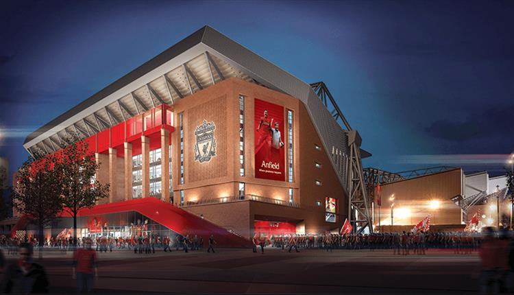
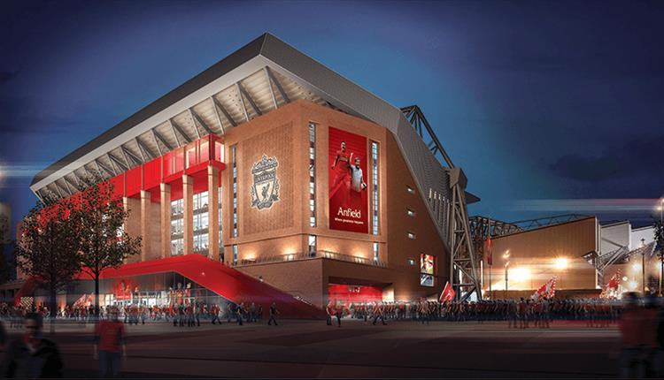

Liverpool’s Leading Attractions Group is exactly what its name suggests; a group of the best days out and places to see in the city region. From museums and galleries to unique buildings, arts centres and tourist experiences, these attractions are must-sees on any trip to the region. Liverpool has the largest collection of museums and galleries in the UK outside London. National Museums Liverpool's seven venues include the World Museum, Museum of Liverpool, Merseyside Maritime Museum and Walker Art Gallery.
The famous Mersey Ferries cruises are unique to Liverpool and a great way to see the city. Fans from all over the world make the pilgrimage to Anfield, home of Liverpool Football Club. Albert Dock is one of the country’s top heritage attractions, boasting museums, galleries, restaurants and bars. Liverpool Cathedral is Britain’s largest, and is a truly great and spectacular space. Try and catch one of the many events, or take the Tower Tour nearly 100 metres above ground for amazing views of Liverpool city region. Liverpool has more parks than Paris, and the stunning Sefton Park Palmhouse is the jewel in the crown of one of Liverpool’s most loved green spaces.